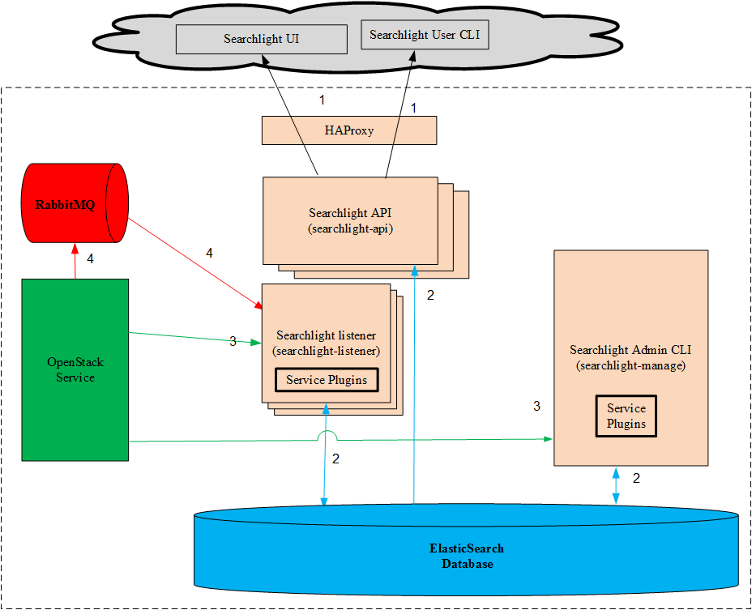
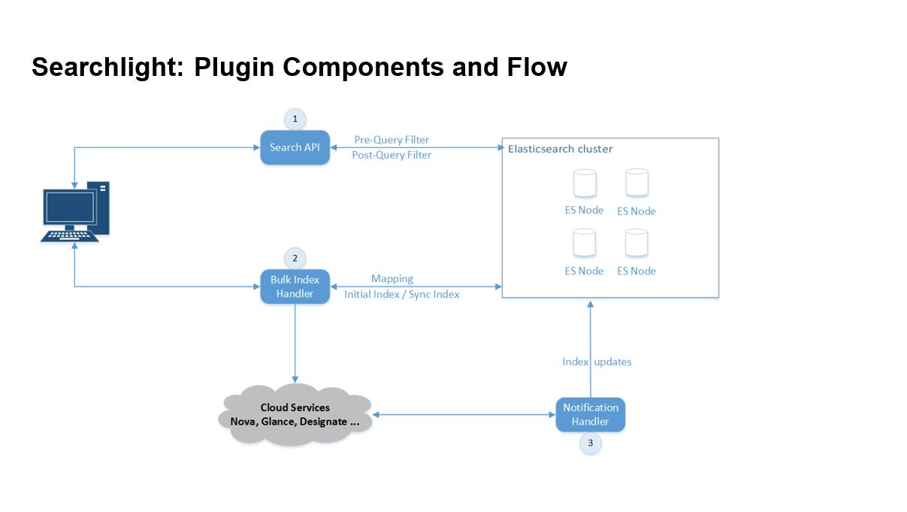
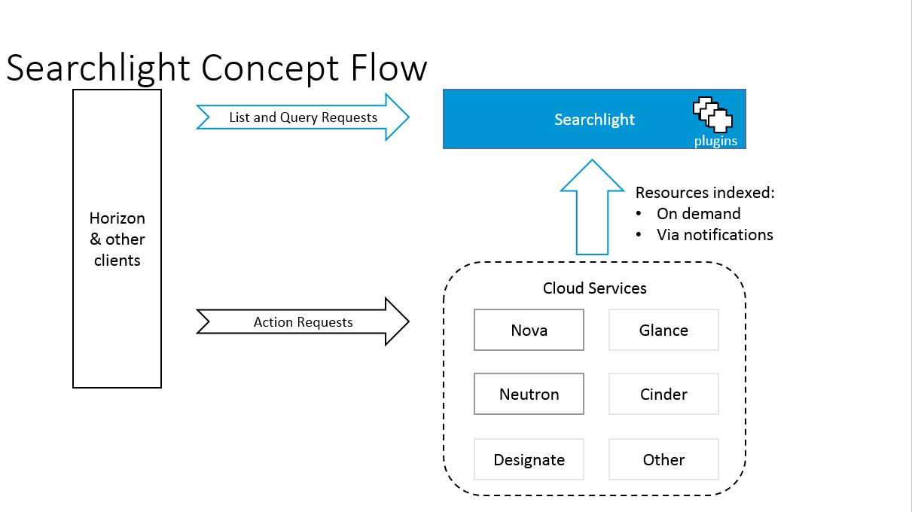
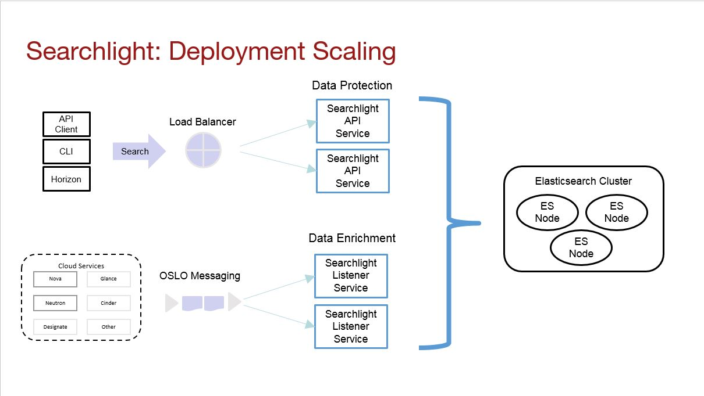

Primary Users¶
The primary users are Horizon-based. This includes users accessing their cloud projects (“tenants”) and cloud administrators (IT operations).
Searchlight is a microservice based architecture that provides advanced and multi-tenant searching capabilities across multiple cloud services through indexing into Elasticsearch. Once indexed, users are able to search through all internal data associated with an OpenStack service through a single API with a consistent interface. These searches can be quite complex, are blazingly fast, and easily paginated. Without Searchlight it can be necessary to make calls to multiple services to retrieve resource information.
All documents in Elasticsearch are protected by Searchlight with role-based access control (RBAC) for data security and protection. RBAC protection prevents unauthorized users from accessing data that they are not permitted to view. Searchlight uses RBAC in three ways to protect the data:
- Network Restriction: Elasticsearch is not directly accessible. It resides on a restricted network behind Searchlight. The only way to access the data within Elasticsearch is indirectly through the Searchlight. API endpoints. Users need to be authenticated to access these endpoints.
- Document Separation: Each resource is indexed twice in Elasticsearch. Once for the admin user and once for all others. The document associated with the admin has all fields present. The document associated with non-admins has all admin-only fields removed. This model prevents a non-admin from viewing any admin-only fields since these fields are not present in the document at all.
- Pre-Query Protection: Searchlight will inject RBAC-based protection into all queries before they get sent to Elasticsearch. In general the pre-query RBAC injection will provide gross level protection. For example, entire projects that the user does not have access to. See Figure 2.
- Post-Query Protection: Searchlight uses the RBAC-based protection to filter the response to each query in order to remove any sensitive data before returning the results to the eagerly waiting user. In general the post-query RBAC filtering will provide fine level protection. For example, specific fields within a document. See Figure 2.
The functionality provided by Searchlight differs greatly from the logging capabilities of OpenStack. The logging services store predetermined messages from the OpenStack services, as opposed to the dynamic, internal state of the OpenStack services.
The primary users are Horizon-based. This includes users accessing their cloud projects (“tenants”) and cloud administrators (IT operations).
Searchlight consists of multiple components. The components live in one of two environments: externally on the end-user’s system or internally on an OpenStack deployed system. Figure 1 illustrates how all of these components interact.
Figure 1: Architecture Diagram
Figure 1 shows the relationship between all of the Searchlight components. The external Searchlight components are colored light-grey. The internal Searchlight components are colored peach. The internal non-Searchlight components are brightly colored, as are the arrows indicating the interfaces for these components.
The numbered arrows represent the interfaces between the components. These interfaces are fully described in Table 1.
The Searchlight Eco-system is illuminated by Figure 2. We will step through each stage of the Searchlight life-cycle to further explore how the various components interact with each other.
Deployment Stage: This stage is when Searchlight gets instantiated by the admin dev ops. Even though the steps are mentioned as if they are manual steps, they are all done within a deployment process. More deployment stage options are discussed in Figure 4.
searchlight-manage index sync on
a Searchlight node. Searchlight will pull the data from the OpenStack
service’s API and index it into Elasticsearch.searchlight-listener At this
point, Searchlight is notified of any state changes that occurs in the
services. The OpenStack services will push the data to Searchlight, which
in turn will index that data into Elasticsearch.searchlight-api At this point,
the Searchlight API is live and anyone can start making queries to
Searchlight.Running Stage (automatic): This stage consumes the vast majority of the Searchlight life cycle. The running stage is further highlighted in Figure 3.
Maintenance Stage (manual): This stage occurs when the admin needs to analyze the state of Searchlight Eco-system or make corrections to it.
searchlight-manage command. Any orphaned indices will be taken
care of through Elasticsearch and not through Searchlight.
See Elasticsearch Index Cleanup.searchlight-manage similarly to step 4 in
the deployment stage. See Bulk indexing.Figure 2: Searchlight Eco-System
The main portion of the Eco-system, the running stage, is showcased in Figure 3. The diagram is from the viewpoint of the users of the Eco-system.
The clients will access the OpenStack services. This could include issuing commands to create a new server, delete a volume or modify a networking subnet. The commands can be sent directly to the OpenStack service’s API or indirectly through the Horizon dashboard. Once these commands are executed by the OpenStack services, the OpenStack services will notify Searchlight of the resulting state changes.
Simultaneously, the user can make queries of Searchlight to better understand the entire OpenStack Eco-system. These queries can be made directly through the Searchlight API or indirectly through the Horizon dashboard.
Figure 3: Searchlight Flow
When deploying Searchlight, the Eco-system is scaled in multiple ways. This scaling is done for both performance and reliability. Both the Searchlight API and the Searchlight listener are stateless microservices. This makes it easier to scale them. Figure 4 shows this in glorious color.
Searchlight API Services:
Searchlight Listeners:
Elasticsearch:
Figure 4: Searchlight Scaling
Tables 1 and 2 provide more details with the interfaces in Figure 1. These details are geared toward understanding the security model and analyzing potential threats for Searchlight.
Table 1: Interfaces
| Interface | Network protocol | Requestor | Request | Request credentials | Request authorization | Listener | Response | Response credentials | Description of operation |
|---|---|---|---|---|---|---|---|---|---|
| 1 | HTTPS | Searchlight UI | Horizon Searches | Session token | Admin or User | Searchlight API | Search results | TLS Certificate | Search query from Horizon. |
| 1 | HTTPS | Searchlight User CLI | User Searches | Session token | Admin or User | Searchlight API | Search results | TLS Certificate | Search query form user. |
| 2 | HTTP | Searchlight API | Query | None | None | Elasticsearch | Query Results | None | Elasticsearch access to query data. |
| 2 | HTTP | Searchlight Listener | Query/Index | None | None | Elasticsearch | Query/Index Results | None | Elasticsearch access to re-index or query data. |
| 2 | HTTP | Searchlight Admin CLI | Query/Index | None | None | Elasticsearch | Query/Index Results | None | Elasticsearch access to re-index or query data. |
| 3 | HTTPS | Searchlight Listener | Service State Update | Session token | Admin | OpenStack Service | State Changes | TLS Certificate | Querying Service state changes. |
| 3 | HTTPS | Searchlight Admin CLI | Service State Update | Session token | Admin | OpenStack Service | State Changes | TLS Certificate | Querying Service state changes. |
| 4 | AMQP | Service | Connect to MQ | Service’s MQ | Service MQ Account | RabbitMQ | State Changes | TLS Certificate | Service connects to MQ and pushes state changes. |
| 4 | AMQP | Searchlight Listener | Connect to MQ | Searchlight’s MQ | Searchlight MQ Account | RabbitMQ | State Changes | TLS Certificate | Searchlight Listener connects to MQ to listen for state changes pushed by OpenStack services. |
Table 2: Default Network Ports
| Port / Range | Protocol | Notes |
|---|---|---|
| 5671 | AMQPS | Messaging protocol |
| 9200 | HTTP | Elasticsearch protocol |
| 9393 | HTTPS | Searchlight API access |
Searchlight’s security and threat analysis can be viewed through multiple control points.
Searchlight has dependencies on other components. The OpenStack services are “soft” dependencies. The dependency exists only if the plugin for that particular service is enabled.